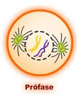

B.I.M.Y.T
B.I.M.Y.T
Aqui você vai poder ter uma maior interação com o conteúdo de nossa apresentação, divirta-se! :)
• A mitose é essencial para o crescimento, desenvolvimento e reparo do organismo. Sua importância está no fato de ser o processo que permite a divisão de uma célula em duas células-filhas geneticamente idênticas, garantindo que cada nova célula receba uma cópia completa do DNA.
- Com a profase é a primeira fase da mitose e é crucial para o início do processo de divisão celular.
A cromatina (material genético) começa a se condensar, formando os cromossomos visíveis sob o microscópio.
As fibras do fuso se formam a partir dos centríolos, que se movem para os polos opostos da célula.
A membrana que envolve o núcleo começa a se desintegrar, permitindo que os cromossomos fiquem livres na célula.
A prófase é fundamental para garantir que a divisão celular ocorra corretamente. A condensação dos cromossomos é vital para evitar que eles se emaranhem durante a separação. Além disso, a formação adequada do fuso mitótico assegura que cada célula filha receberá uma cópia idêntica do material genético.
A metáfase é a segunda fase da mitose e é um momento crucial para garantir que a divisão celular ocorra de maneira precisa e ordenada. • Alinhamento dos cromossomos: Durante a metáfase, os cromossomos se organizam e alinham-se no plano equatorial da célula, conhecido como placa metafásica. Isso ocorre devido à ação dos microtúbulos do fuso mitótico que se ligam aos cinetócoros dos cromossomos. • Verificação do alinhamento: O fuso mitótico realiza uma verificação crítica para garantir que todos os cromossomos estejam corretamente alinhados e conectados aos microtúbulos. Essa verificação é fundamental para evitar erros na distribuição do material genético nas células-filhas. Se algum cromossomo não estiver corretamente posicionado, a célula pode parar o processo de divisão até que o problema seja resolvido.
Durante essa fase, há uma tensão equilibrada nos microtúbulos que puxam os cromossomos em direções opostas (uma para cada polo da célula). Essa tensão é essencial para garantir que, na próxima fase (anáfase), as cromátides irmãs sejam separadas de forma adequada e igualitária.
A metáfase é crucial porque garante que cada célula filha receba uma cópia idêntica do material genético. Um erro nesta fase pode resultar em aneuploidia, que é uma condição onde as células possuem um número anormal de cromossomos, o que pode levar a problemas de desenvolvimento e doenças, como certos tipos de câncer.
A anáfase é a terceira fase da mitose e é um momento decisivo em que as cromátides irmãs se separam e são puxadas para os polos opostos da célula.
As cromátides irmãs de cada cromossomo são puxadas para os polos opostos da célula. Isso é feito pelo encurtamento dos microtúbulos do fuso.
A célula começa a se alongar à medida que as cromátides se movem para os polos opostos.
A Anáfase é crucial para a distribuição equitativa do material genético entre as células filhas. Qualquer tipo de erro nessa fase podem resultar em aneuploidia, afetando a saúde e o desenvolvimento.
A telófase é a última fase da mitose, que ocorre após a anáfase. • Reformação de membrana nuclear: Uma nova membrana nuclear se forma ao redor de cada conjunto de cromossomos nos polos opostos. • Descondensação dos cromossomos: Os cromossomos começam a descondensar-se novamente em cromatina, tornando-se menos visíveis. • Formação do nucléolo: O nucléolo reaparece dentro de cada núcleo recém-formado.
A telófase é crucial porque marca o fim da divisão celular, completando a separação do material genético em duas células filhas. Após essa fase a célula geralmente passa por um processo chamado citocinese, que divide o citoplasma e resultar em duas células completas.
Embora não seja uma fase da mitose em si, a citocinese é o processo final que ocorre após a telófase. • Divisão do citoplasma: O citoplasma celular é dividido em duas partes resultando em duas células-filhas. Em células animais, isso ocorre através de um anel contrátil que aperta e divide a célula em células; em células vegetais, forma-se uma nova parede celular entre as duas células filhas. Essas fases trabalham em conjunto para garantir que a divisão celular ocorra de maneira ordenada e precisa.
Representação da fases da mitose.
Representação da prófase.
Vídeo como complemento da mitose e meiose.